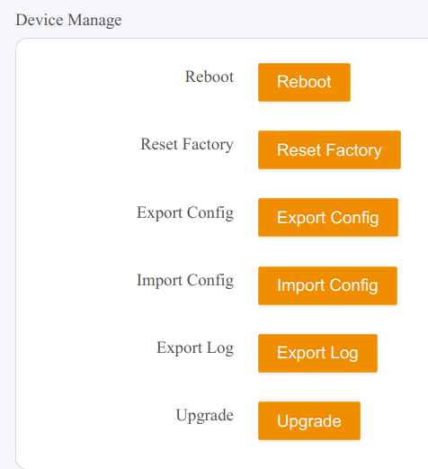
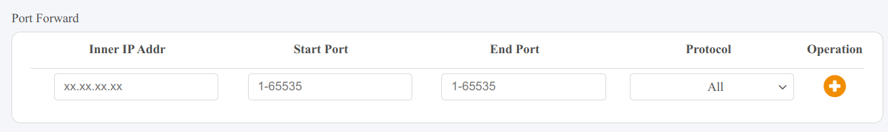
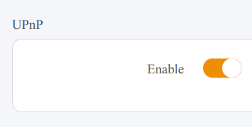

The modem and router are two very distinct, but just as integral pieces of equipment to setting up internet in your home. The modem is what connects to your Internet Service Provider (ISP) to your home, the router is what actually distributes this connection to your devices.

General Questions
There are some tips you can employ to try and optimize performance within your house. Try to place the router in a central location, and try not to have anything interrupting or interferring with the signal in between it and whatever it is connecting to. This includes bluetooth devices, microwaves, metal, and walls.
By getting your own router, you can save money in fees, and buying your own router can often help get you exactly what fits your needs. The main benefit of purchasing through an ISP is that it will come configured for you. However, with this website you can get it configured in no time!
Hold down the RESET button for 10 seconds. This will restore default SSID name of N300-36E1, default password of 123456789, and default control panel login of admin/admin. Additionally, all settings will be reset to factory defaults.
You can access the router's web interface at the URL: http://192.168.10.1
At this web interface, you will need login information. You should have this information saved down from when you set the router up.
Once you are logged in, you can:
- View information about the network and connected devices
- Control and configure your Wi-Fi network
- Apply upload/download banwidth limits per-device
- Turn on/off UPnP
- Perform port-forwarding
- Reboot, factory reset, and debug the router
- Save and restore router configuration
You can do backup and restoration of the router's settings by navigating to the SYSTEM settings page via the navigation panel on the left side and using the Export Config and Import Config buttons under the Device Manage section.

Device Manage control options
Advanced Settings and Use
The DBit N300 is not designed with mesh networks in mind. While theoretically, you could use it with a compatible mesh network or extender, it will not truly be a part of the mesh network. For a better option for you, we recommend our other model, the DBit AX1800.
The Dbit N300 does not support power over ethernet. At this time, none of our products support this feature. If this is something you would like for us to provide, please contact us!
You can add port forwarding rules using in the router web control interface at http://192.168.10.1.
Port forwarding is a networking technique that allows external devices to access services on a private network by mapping an external port to an internal port on a specific device. When a router receives incoming traffic on a designated port, it forwards the data to a specific local IP address and port within the network. This is commonly used for hosting game servers, remote desktop access, and running web servers from home networks.
For example, if you're hosting a Minecraft server on your computer (which listens on port 25565), you can configure your router to forward incoming traffic on port 25565 to your computer's local IP address. Without port forwarding, external devices wouldn't be able to initiate a connection because most home routers block unsolicited inbound traffic for security reasons. However, improper configuration can expose devices to security risks, so it's important to forward only necessary ports and use firewalls where possible.
Navigate to the More section via the panel on the left side.

Port forwarding setting
You can toggle UPnP on and off in the router web interface at http://192.168.10.1.
Universal Plug and Play (UPnP) is a networking protocol that allows devices to automatically discover and communicate with each other on a local network without manual configuration. One of its key features is automatic port forwarding, where applications (like game servers, VoIP services, or peer-to-peer software) can request the router to open specific ports as needed, eliminating the need for users to configure port forwarding manually.
UPnP makes setting up networked applications more convenient, but it comes with security risks. Since any device or application on the local network can request ports to be opened, malware or unauthorized programs could exploit this to expose a system to external threats. For this reason, many security-conscious users disable UPnP and manually configure port forwarding instead.
Navigate to the More section via the panel on the left side.

UPnP control setting
Wi-Fi and Network Configuration
If you are locked out of the control panel, you can factory reset the router to restore the default login credentials. To do this, hold down the RESET button on the bottom of the router until the LED blinks. Then, you will need to re-configure the router. To do so, follow the instructions in the user guide.
If you are unable to find the router Wi-Fi network on the list of networks on your devices, ensure the router is plugged in and the activity light on the top of the router is lit up.
If your wifi network is online but has no connection to the internet, check out our page for steps. If the problem is not resolved, check with your internet service provider and ensure there is not currently an outage or issue on their end.
When the light is RED, it means the router is on, but not connected to the internet.
If it is GREEN, it is connected to the internet.
If it is OFF, the router is off.
Internet and Connectivity
Your network will only be rated for a certain bandwidth by your ISP as per your agreed internet plan. Once your bandwidth becomes saturated, your connection may become slow. It may also become slow if there is too much internal traffic being handled by the router such as if smart home devices are misbehaving or large media like security videos are being transferred.
You can manage limits and internet access per-device in the QoS section of the router web interface to prioritize certain devices.
If the issues persist, consider contacting your ISP to inquire whether they are experiencing any issues on their end.
Login to the router web interface at: http://192.168.10.1
Navigate to the Internet section.
Ensure the Wan Type is set to DHCP.
Navigate to the System section.
Ensure the DHCP Server is Enabled.
Dynamic Host Configuration Protocol (DHCP) is a network management protocol that automatically assigns IP addresses and other network settings to devices on a network. Instead of manually configuring each device with an IP address, subnet mask, gateway, and DNS settings, a DHCP server dynamically distributes this information, ensuring that devices can connect to the network without conflicts or manual intervention.
When a device joins a network, it sends a DHCP Discover request to locate a DHCP server. The server responds with a DHCP Offer, suggesting an available IP address and configuration settings. The device then sends a DHCP Request to accept the offer, and the server finalizes the process with a DHCP Acknowledgment (ACK). This process simplifies network management, especially in environments with many devices, such as home networks, offices, and large enterprises. However, DHCP leases are temporary, meaning devices may receive different IP addresses over time unless they have a static reservation.
The recommended settings will ensure your router will assign IPs to each device upon connecting via DHCP.